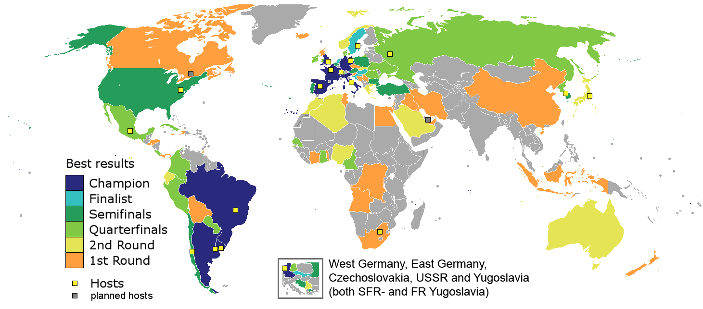

Top World Cup Winners
Main
The Trophy
Top Winners
Fun Facts
Women's World Cup
Credits

Map of countries' best World Cup performances
Country
Number of Wins
Years of Wins
Brazil
5
1958, 1952, 1970, 1994, 2002
Germany
4
1954, 1974, 1990, 2014
Italy
4
1934, 1938, 1982, 2006
Argentina
2
1978, 1986
France
2
1998, 2018